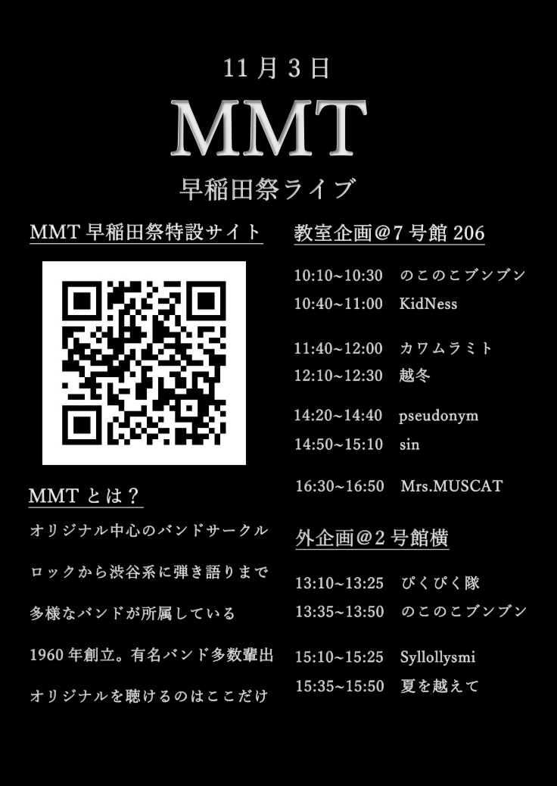
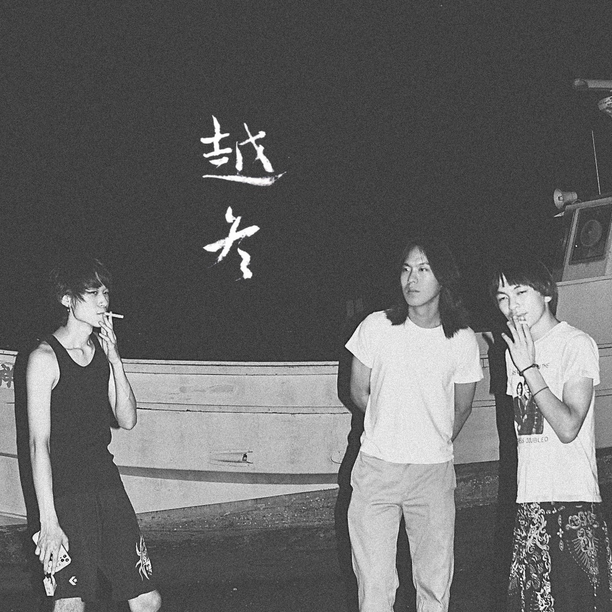
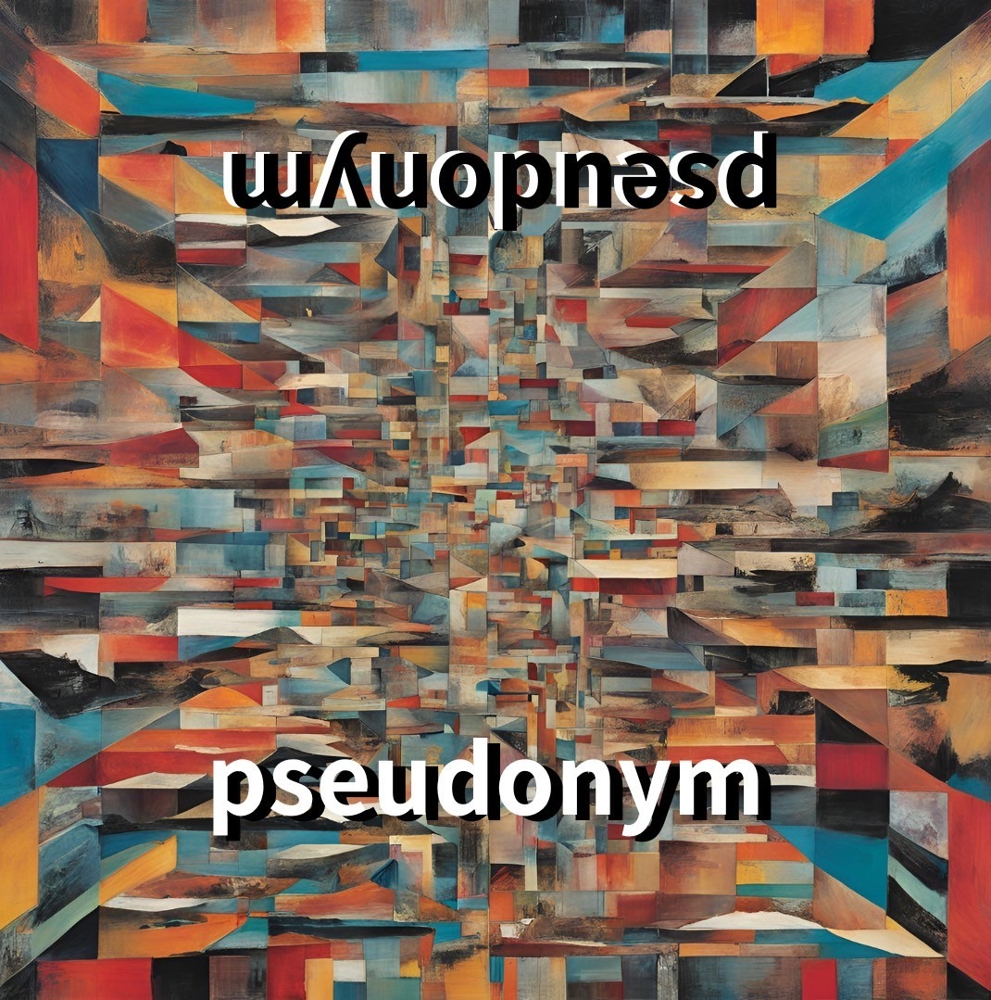
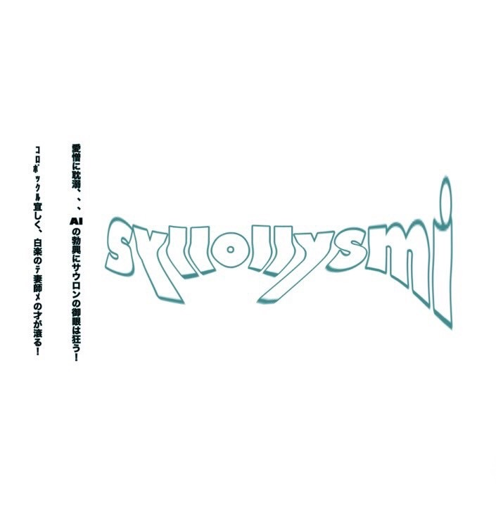

11/3
MMT早稲田祭ライブ
特設サイト
各バンドの情報をまとめました！
Instagram
はこちらから！
Twitter
はこちらから！

MMTのバンドの曲まとめました！
早稲田祭に出演するバンド(ソロ)から曲を集めて、GoogleDriveにまとめました！ぜひ聴いていってください！
曲を集めたGoogleドライブのファイルはこちらから！
↓↓各バンド情報↓↓
○教室企画@7号館206
●ノコノコブンブン
10:10〜10:30
のこのこブンブンのホームページ
●KidNess
10:40〜11:00
KidNessのInstagram
●カワムラミト
11:40〜12:00
カワムラミトのホームページ
●越冬
12:10〜12:30

越冬のホームページ
●pseudonym
14:20〜14:40

●sin
14:50〜15:10
●Mrs.MUSCAT
16:30〜16:50
○外企画@2号館横
●ぴくぴく隊
13:10〜13:25
ぴくぴく隊のInstagram
●ノコノコブンブン
13:35〜13:50
のこのこブンブンのホームページ
●Syllollysmi
15:10〜15:25

●夏を越えて
15:35〜15:50
夏を越えてのInstagram